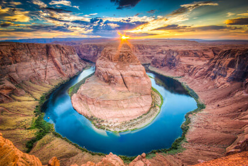

Arizona history is rich in legends of America's Old West. It was here that the great Indian chiefs Geronimo and Cochise led their people against the frontiersmen. Tombstone, Ariz., was the site of the West's most famous shoot-out—the gunfight at the O.K. Corral. Today, Arizona has one of the largest U.S. Indian populations; more than 14 tribes are represented on 20 reservations.
Manufacturing has become Arizona's most important industry. Principal products include electrical, communications, and aeronautical items. The state produces over half of the country's copper. Agriculture is also important to the state's economy. Top commodities are cattle and calves, dairy products, and cotton.
2015 resident population: 6,828,065
